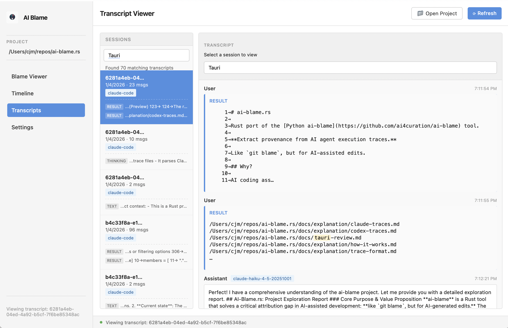

Tauri Desktop App
Overview
The AI Blame Tauri app provides a modern, cross-platform desktop interface for visualizing and exploring AI-assisted code edits. Built with Tauri, the app offers a fast, native experience with a responsive web-based UI that connects directly to the ai-blame Rust library.

The desktop app complements the CLI by providing visual exploration of AI-assisted edits with interactive navigation between views.
Why Use the Desktop App?
The Tauri app complements the CLI by providing:
- Visual blame viewer — Inspect file-level attribution with edit history and session details
- Timeline view — Chronological list of all AI edits with direct navigation to files
- Transcript search — Search across all AI sessions to find specific conversations
- Cross-view navigation — Jump from timeline → blame → transcript and back
- Configuration studio — Edit
.ai-blame.yamlvisually with live preview (planned) - Real-time monitoring — Watch for new traces (planned)
For comprehensive CLI functionality, see the CLI documentation.
User Interface
The app features a modern, responsive interface with four main views accessible from the sidebar navigation. Each view is fully functional and connected to the backend.
Blame Viewer
View file-level attribution showing which AI models edited specific lines of code.
Features:
- Three-panel layout:
- Files panel (left): Browse project files with search and "AI-touched only" filter
- Code panel (center): View file content with line numbers and attribution
- Details panel (right): Show model, timestamp, and session info for selected lines
- Interactive elements:
- Click a line to see who edited it, when, and via which session
- Click the session ID in details to jump to the transcript
- Clickable file names for quick selection
- Search files by name pattern
- Filtering:
- Toggle "AI-touched only" to see only files edited by AI
- Search for specific files
Planned improvements:
- Syntax highlighting for all file types
- Color-coded lines by AI model
- Filter by model, date range, or file pattern
- Export to HTML
Timeline

Chronological list of all AI edits in your project with direct navigation to source files.
Features:
- Timeline table with columns:
- Timestamp (formatted local time)
- Action (CREATED or EDITED)
- File (clickable to jump to blame viewer)
- Model (AI model used)
- Agent (agent tool and version, e.g., claude-code@2.0)
- Controls:
- Limit: Configure how many recent edits to show (default 50)
- Skip Codex: Exclude GitHub Copilot/Codex traces
- Navigation:
- Click any file name to jump to Blame Viewer with that file loaded
- See agent version alongside agent name for context
Planned improvements:
- Filter by model, date range, or file pattern
- Heatmap showing peak editing times
- Aggregate statistics (most-edited files, most-active models)
Transcripts

Search and explore AI conversation sessions with full message content.
Features:
- Session list (left side):
- Browse all AI sessions discovered in your project
- Shows session date, message count, and agent type
- Clickable sessions to view full conversation
- Search within transcript:
- Real-time search across message content (case-insensitive)
- Filters messages as you type
- Shows "no matches" when search returns empty
- Transcript viewer (right side):
- Full conversation history with user and assistant messages
- Message metadata: timestamp, model, token usage
- Content blocks: text, thinking, code, tool use, commands
- Formatted output for all content types
- Navigation:
- Click session ID from Blame Details to jump here
- Automatically loads the session transcript
Planned improvements:
- Cross-transcript search (find text across all sessions)
- Filter sessions by agent tool, model, date range
- Export transcripts to markdown or PDF
- Syntax highlighting for code blocks
Settings

Configure AI Blame behavior and manage project settings.
Features:
- General settings:
- Project path selection via file picker
- Home directory override for trace discovery
- Enable/disable DuckDB caching
- Cache management:
- Clear cache button to reset cached trace data
- Toggle caching on/off
- Future options:
- Default policy (Sidecar, Append, Comment, Skip)
- Configuration file editor
Installation & Setup
Prerequisites
To build or run the Tauri app, you need:
- Rust toolchain (latest stable)
- Tauri prerequisites for your platform:
- Linux:
webkit2gtk,libgtk-3,libayatana-appindicator3 - macOS: Xcode Command Line Tools
- Windows: Microsoft Visual Studio C++ Build Tools
- Linux:
Check your setup:
Running the App
Option 1: Desktop App (Recommended)
Build and run the Tauri desktop application:
This launches the native desktop app with the UI loaded from the ../ui/ directory.
Option 2: Development Mode
For UI development with hot reload (requires Tauri CLI):
Changes to ui/ files will automatically refresh the app.
Option 3: Static Web View (No Backend)
For quick UI prototyping without Tauri:
# From repo root, serve the static UI
python3 -m http.server -d ui 8000
# Visit http://localhost:8000 in your browser
Note: The browser version has no backend access, so Tauri-specific features (file picker, trace scanning) won't work.
Building Release Binaries
To create distributable binaries for your platform:
This generates platform-specific installers in src-tauri/target/release/bundle/:
- Windows:
.msiand.exeinstallers - macOS:
.dmgand.appbundle - Linux:
.AppImage,.deb, and.rpmpackages
Architecture
The Tauri app consists of two main parts:
Frontend (UI)
Located in the ui/ directory:
index.html— Page structure and layoutstyles.css— Responsive design and themingapp.js— Navigation logic and mock data
The frontend is a simple HTML/CSS/JavaScript application without external dependencies.
Backend (Rust)
Located in src-tauri/src/main.rs, the Tauri backend calls the core ai-blame library with no code duplication.
Current backend commands:
app_info— Application name and versionpick_project_dir— File picker for project selectionlist_project_files— List files in project with filteringlist_agent_touched_files— Get files edited by AI agentsblame_file— Generate line-level attribution for a filelist_timeline— Get chronological list of all edits with filteringlist_transcripts— Discover all AI conversation sessionsget_transcript— Load full transcript by session IDsearch_transcripts— Search transcripts by query, agent, model, date range
Planned backend commands:
load_config— Load.ai-blame.yamlconfigurationsave_config— Save configuration to file- Advanced trace statistics and analytics
Communication
The frontend and backend communicate via Tauri's IPC (Inter-Process Communication):
- Commands: Frontend calls Rust functions (async RPC)
- Events: Backend pushes updates to frontend (pub/sub)
Known Limitations
- No file operations — Cannot read or write files from the UI (CLI recommended for annotate)
- Limited state persistence — Selected project is remembered, but other settings reset on restart
- No syntax highlighting — Code blocks display as plain text
- No color-coding — Lines not yet color-coded by AI model
- Search limitations — In-transcript search is JavaScript-based (frontend-only); cross-transcript search available via backend but not yet exposed in UI
- No keyboard shortcuts — Navigation is primarily mouse/click-based
Development Roadmap
Planned Enhancements
Search & Discovery:
- Expose cross-transcript search in UI
- Add filters: by model, agent, date range
- Session search by metadata
Blame Viewer:
- Syntax highlighting for code files
- Color-code lines by AI model
- Edit history timeline for selected lines
- Export blame view to HTML or markdown
Configuration UI:
- Load and validate
.ai-blame.yamlfiles - Visual rule builder
- Real-time configuration preview
Polish & Advanced Features:
- Persistent state (selected project, view preferences)
- Dark mode support with persistence
- Real-time file system watching
- Advanced analytics: heatmaps, statistics
- Keyboard shortcuts and accessibility
Troubleshooting
"No traces found" or Timeline/Transcripts are empty
This can happen if:
1. Project not set — Click "📁 Open Project" in the header and select your project directory
2. No traces discovered — Check that your project has Claude Code traces in ~/.claude/projects/
3. Home directory path — If traces are in a custom location, set it in Settings → Home Directory
For debugging, use the CLI:
Tauri app won't build
Ensure you have all Tauri prerequisites installed:
Common issues:
- Linux: Missing webkit2gtk or GTK development libraries
- macOS: Xcode Command Line Tools not installed
- Windows: Missing Visual Studio C++ Build Tools
See the Tauri prerequisites guide for platform-specific instructions.
UI looks broken
Try clearing the cache or rebuilding:
"Blocked by CSP" errors in console
The Content Security Policy in tauri.conf.json restricts resource loading for security. This is normal — the app is designed to work within these constraints.
Contributing to the UI
We welcome contributions! Here are ways you can help:
- UI/UX improvements — Suggest layout changes or new features
- Frontend development — Improve HTML/CSS/JS in
ui/ - Backend commands — Implement Tauri commands in
src-tauri/src/main.rs - Testing — Test the UI and report issues
- Documentation — Improve this guide or add tutorials
See CONTRIBUTING.md for development setup and guidelines.
CLI vs. Desktop App
Both the CLI and desktop app are now functional for exploring AI-assisted edits:
Use the Desktop App for: - Visual blame exploration with details panel - Timeline view of all edits - Searching and exploring transcripts - Cross-view navigation (jump between timeline, blame, and transcripts) - Interactive exploration of AI sessions
Use the CLI for: - Bulk operations and automation - Annotating files with provenance data - Advanced filtering and reporting - Scripting and integration with other tools - Production workflows
Example CLI commands:
ai-blame stats # See available traces
ai-blame blame src/main.rs # Show line-level blame
ai-blame timeline # Chronological timeline
ai-blame report # Generate a provenance report
ai-blame annotate # Embed provenance in files
See Also
- UI Prototype TODO — Detailed implementation roadmap
- UI Implementation Plan — Full architecture and design doc
- Tauri Documentation — Tauri framework documentation
- CLI Reference — Full CLI command documentation
- Configuration Guide — How to configure AI Blame behavior